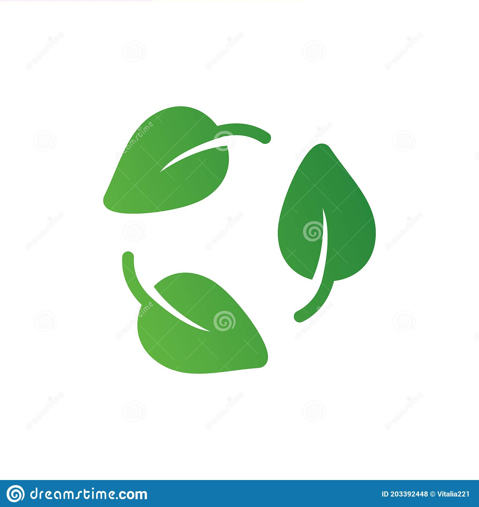

Recycle word 
Qué es el reciclaje El proceso de reciclaje define a las acciones de recogida de determinados productos, que de no ser recuperados de forma adecuada se convierten en residuos. Algunos de estos son materiales como el cartón, la madera o los plásticos, que pueden convertirse en nuevos productos con el tratamiento adecuado.
Separacion de residuos
Es importante saber que el proceso de reciclaje varía en función del tipo de producto. Así que el primer paso a seguir es determinar si los productos pueden ser utilizados de nuevo o no, para poder reciclar, primero debemos separar los residuos en el contenedor para reciclaje correspondiente según el material del que están hechos.
Esto puede incluir vidrio, papel, cartón, aluminio, latas, etc… La instalación de contenedores adecuados en lugares estratégicos para que las personas puedan depositar los artículos correctos en los recipientes correspondientes, es el comienzo del proceso de reciclaje facilitándolo y agilizándolo.
Si bien el proceso exacto de reciclaje depende de cada residuo, podemos diferenciar los siguientes tipos de reciclaje a grandes rasgos:
-
Mecánico: Todas las técnicas y procesos que incluyen trabajo manual o ayudado por máquinas. Este tipo de reciclaje se utiliza mucho en la clasificación de residuos mezclados y en el reciclaje del plástico.

- Químico: Incluye técnicas y procedimientos que implican cambios en la estructura química del material.

- Energético: Se trata de reciclaje de materiales cuyo fin es el aprovechamiento energético.

- Biológico: Busca la degradación de toda materia orgánica en presencia o ausencia de oxígeno.